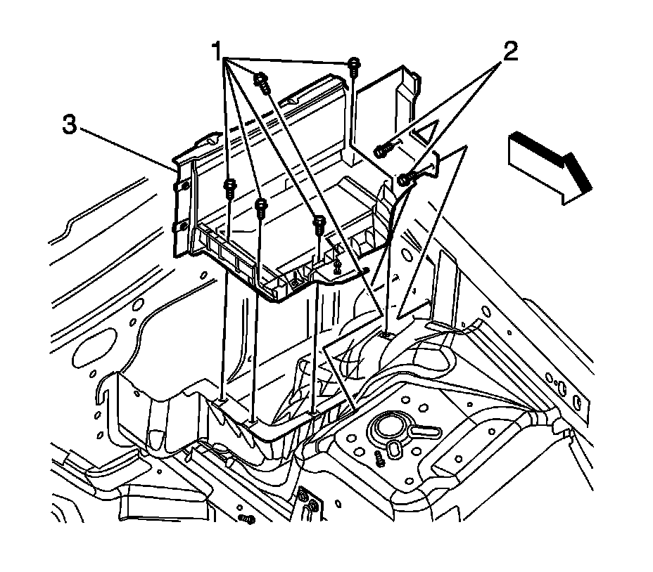

Battery Tray Replacement (RHD)
Battery Tray Replacement (RHD)
Removal Procedure

1. Remove the battery. Refer to Battery Replacement (LHD) (Battery Replacement)Battery Replacement (RHD) (Battery Replacement (RHD)) .
2. Remove the battery tray bolts (1, 2).
3. Remove the battery tray (3) from the vehicle.
Installation Procedure
1. Install the battery tray (3) into the vehicle.
Notice: Refer to Fastener Notice (Fastener Notice) .
2. Install the battery tray bolts (1, 2).
Tighten the bolts to 6 N.m (53 lb in).
3. Install the battery. Refer to Battery Replacement (LHD) (Battery Replacement)Battery Replacement (RHD) (Battery Replacement (RHD)) .